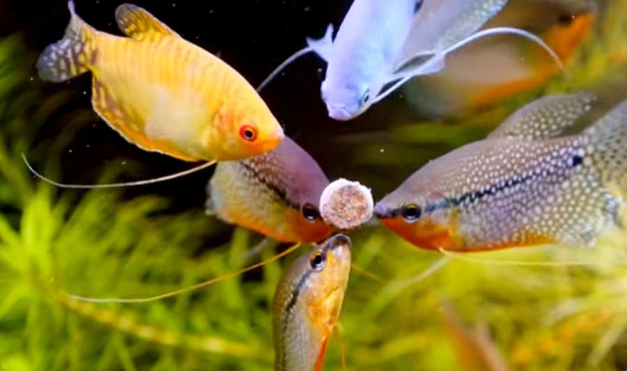
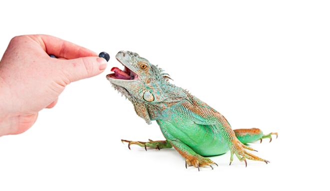

Alimento para tu mascota
En PS-MoPi contamos con una gran variedad de alimentos secos y humedos para tus mascotas contamos con alimento para Gatos, Perros, Aves, Peces y Reptiles
Tips para cambiar la alimentacion de tus mascotas
-
Si deseas hacer un cambio gradual en la alimentación de tu pequeño debes realizarlo de manera gradual con la finalidad de que poco a poco su sistema digestivo se adapte a los ingredientes, ya que en el caso de realizar el cambio de alimento de forma brusca, tu pequeño podría presentar algún problema en sus sistema digestivo a pesar de ser un producto de primera calidad.
Alimento para Gatos
Marcas de alimento para gatitos que manejamos en PS-MoPi
- Merrick Purrfect Bistro
- Hill's Science Diet
- WholeHearted
- Pro Plan
- Royal Canin
- Instinct Original

Cuida la alimentacion de tus gatitos con una comida de gran variedad de nutrientes que les encantara
.jpg)
.jpg)
.jpg)


Ir al principio
Alimento para Perros
Marcas de alimento para perritos que manejamos en PS-MoPi
- Pro Plan Optiderma Sensitive Skin
- WholeHearted
- Canidae Pure
- Hill's Science Diet Healthy Cuisine
- Livelong Healthy & Strong
- Natural Gourmet

Cuida la alimentacion de tus perritos con una comida de gran variedad de nutrientes que les encantara
.jpg)
.jpg)
.jpg)
.jpg)
.jpg)
.jpg)
Ir al principio
Alimento para Aves
Marcas de alimento para aves que manejamos en PS-MoPi
- Versele-Laga NutriBird P15 Tropical
- Cunipic
- Krukets Krukets
- Marvell
- Healthy Select Mijo

Cuida la alimentacion de tus aves con una comida de gran variedad de nutrientes que les encantara


Ir al principio
Alimento para Peces
Marcas de alimento para peces que manejamos en PS-MoPi
- Tetra Color
- Tetra Fin
- Azoo Ultra Fresh Pellet Premium
- Azoo 9 en 1
- Tetra Pond

Cuida la alimentacion de tus peces con una comida de gran variedad de nutrientes que les encantara


Ir al principio
Alimento para Reptiles
Marcas de alimento para reptiles que manejamos en PS-MoPi
- Azooplus
- Zoo Med Flower Food Topper
- Azoo Ultra Fresh Pellet Premium
- Zoo Med Pacman Frog
- Abepet Adulto

Cuida la alimentacion de tus reptiles con una comida de gran variedad de nutrientes que les encantara


Ir al principio